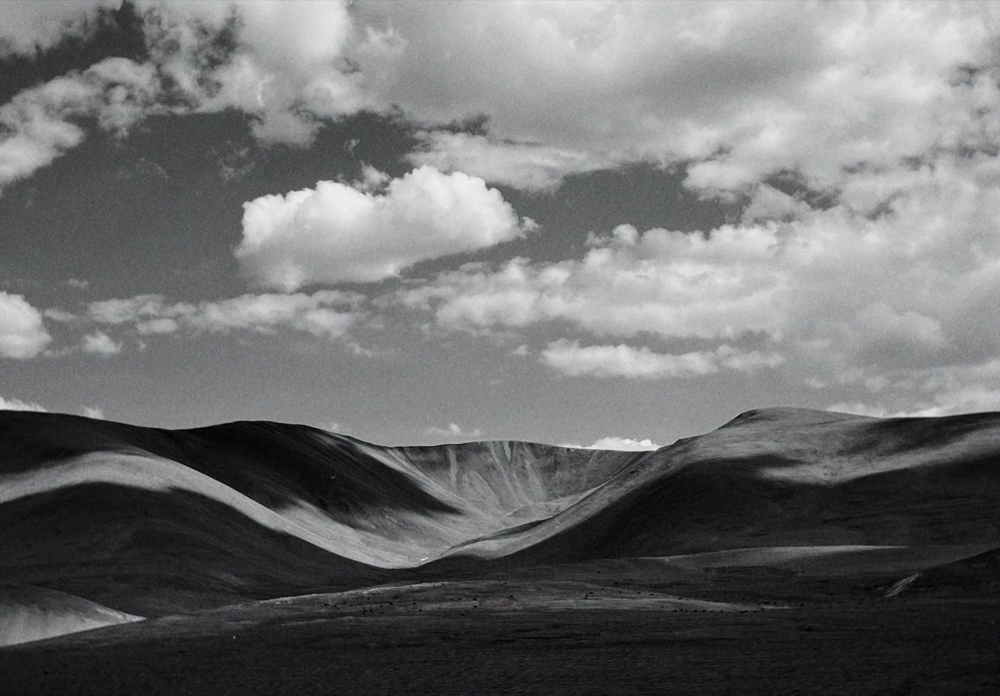
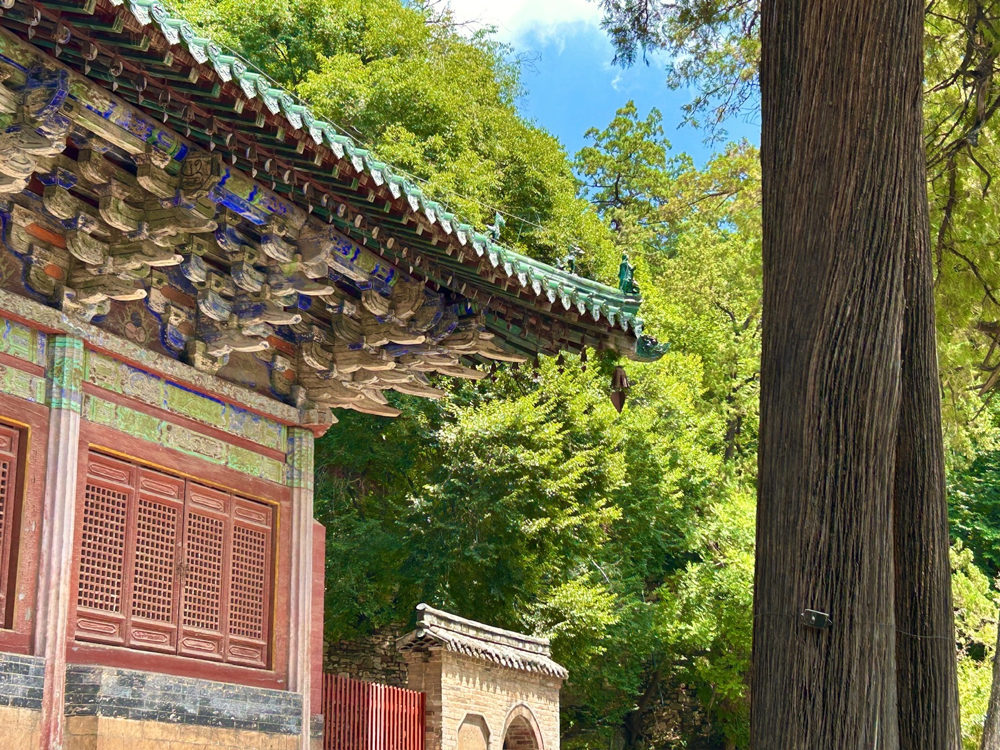
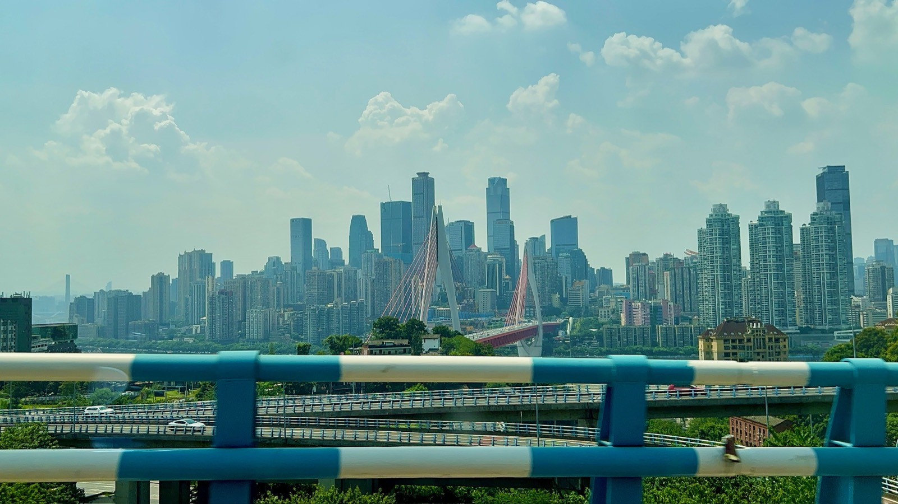
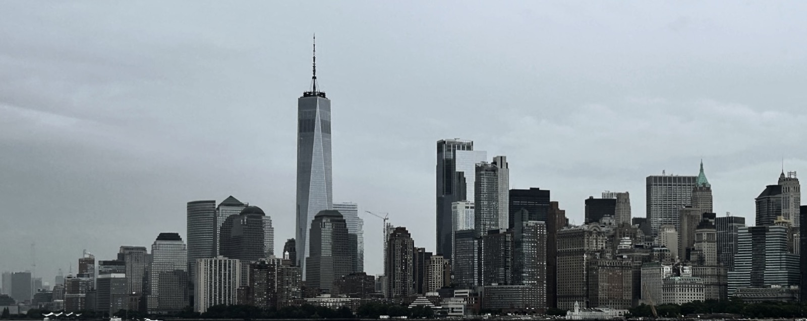
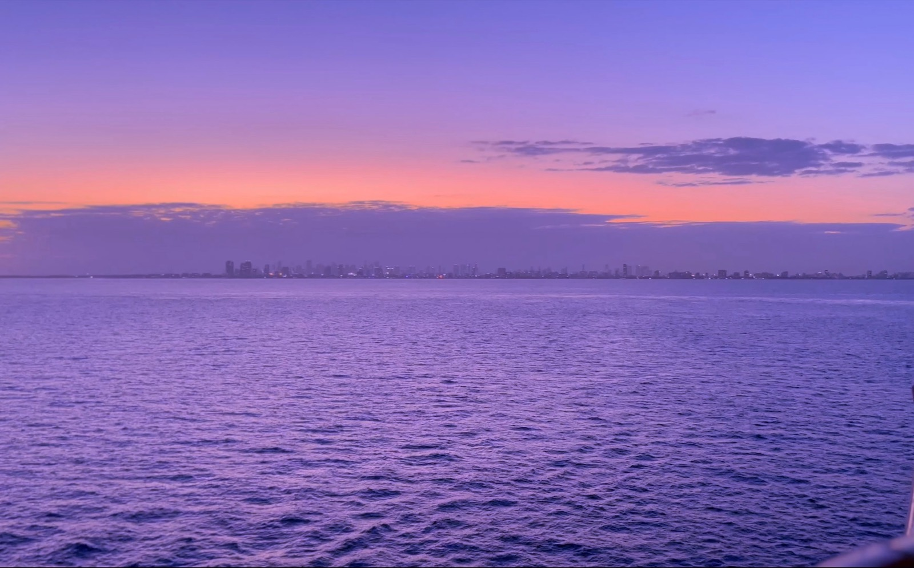
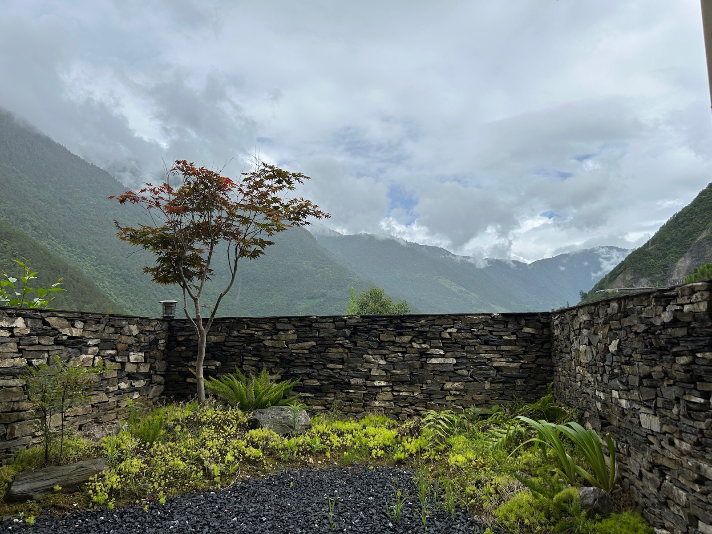
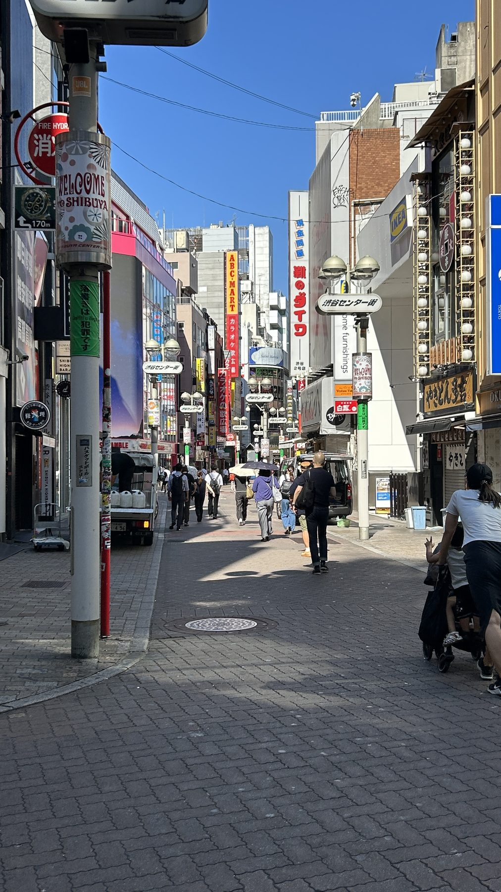
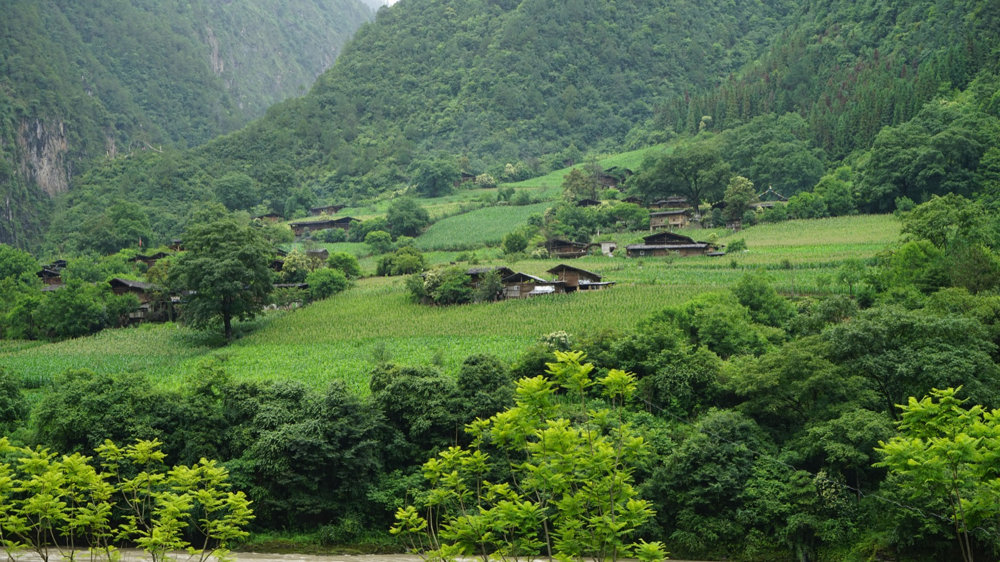
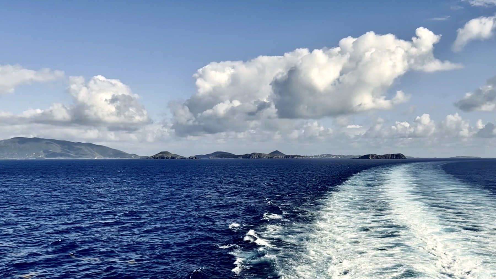

Photography
Photographs made in transit, with attention to silence, distance, and passing human traces.
Selected Works









Photographs made in transit, with attention to silence, distance, and passing human traces.








